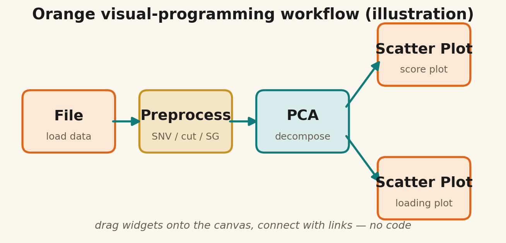

Tecator 肉品 NIR：從光譜到脂肪含量
這一章使用經典 Tecator meat NIR dataset。你的任務是把 240 個肉品樣本的近紅外光譜轉成可解釋的 PCA 圖，並用 PLS regression 預測脂肪含量。
資料矩陣
240 個樣本，每個樣本 100 個波長吸光值。
目標 y
以濕化學測得的脂肪含量作為 PLS 預測目標。
核心方法
PCA 看結構，PLS 做定量預測。
OpenML id 505NIR spectraSNVPLS regression
兩種方式：雲端 Colab（零安裝）或本機 Python
這一章的 Python 全部整理成一個 Jupyter notebook。最推薦用 Google Colab：只要瀏覽器和 Google 帳號就能跑，完全不用安裝任何東西，連手機、平板都能開。
① 雲端執行（建議）
點按鈕在 Google Colab 開啟，選「執行階段 ▸ 全部執行」即可。scikit-learn / pandas / matplotlib 都已預裝，資料自動從線上讀取——零安裝、零下載。
② 本機執行
下載 notebook 與資料，用自己的 Jupyter / VS Code 開。需先安裝一次：pip install numpy pandas scikit-learn scipy matplotlib。
X 是光譜，y 是成分真值
每一列是一個肉品樣本；每一欄是 850–1050 nm 的吸光值。這種資料很適合入門，因為樣本數不大、光譜乾淨、脂肪含量和 NIR 的 C–H 吸收有明確關係。
| 欄位 | 意思 | 本章用途 |
|---|---|---|
absorbance_1 ... absorbance_100 | NIR 吸光值 | 輸入矩陣 X |
moisture | 水分 % | 備用目標 |
fat | 脂肪 % | 主要預測目標 y |
protein | 蛋白質 % | 備用目標 |
SNV：先降低散射與基線差異
肉品樣本的顆粒大小、表面狀態與量測距離會造成散射差異。SNV 會對每一條光譜各自標準化，讓模型更專注於化學差異。
def snv(X):
"""Standard Normal Variate: row-wise scatter correction."""
mu = X.mean(axis=1, keepdims=True)
sd = X.std(axis=1, keepdims=True)
return (X - mu) / sdSNV 是逐樣本處理，和 autoscaling 逐變數處理不同。入門階段先比較 raw spectra 與 SNV spectra 的 PCA / PLS 結果。


先看脂肪含量是否沿主成分呈現梯度
做 PCA 時不使用 fat 當輸入，但可以用 fat 幫 score plot 上色。若樣本沿 PC1 或 PC2 出現由低脂到高脂的連續梯度，代表光譜中的主要變異和成分差異有關。
from sklearn.decomposition import PCA
from sklearn.preprocessing import StandardScaler
Xs = snv(X)
Xp = StandardScaler().fit_transform(Xs)
pca = PCA(n_components=5).fit(Xp)
T = pca.transform(Xp)| 圖 | 你要看什麼 |
|---|---|
| PCA score plot | 樣本是否依脂肪含量呈現梯度？是否有 outlier？ |
| PCA loading plot | 哪些波長推動 PC1 / PC2？是否可能和 C–H、O–H 吸收有關？ |
| Scree plot | 前幾個 PC 解釋多少變異？ |


用整條 NIR 光譜預測脂肪含量
PLS 會找出同時描述 X 光譜與 y 脂肪含量的 latent variables。它比單波長回歸更適合 NIR，因為 NIR 訊號高度重疊且變數彼此相關。
from sklearn.cross_decomposition import PLSRegression
from sklearn.model_selection import KFold, cross_val_predict
from sklearn.pipeline import Pipeline
from sklearn.metrics import mean_squared_error, r2_score
cv = KFold(n_splits=5, shuffle=True, random_state=42)
model = Pipeline([
("scaler", StandardScaler()),
("pls", PLSRegression(n_components=6))
])
y_cv = cross_val_predict(model, snv(X), y_fat, cv=cv).ravel()
print("RMSECV", mean_squared_error(y_fat, y_cv, squared=False))
print("R2CV", r2_score(y_fat, y_cv))


用 Orange Data Mining 拖一遍同樣的流程
不想寫 Python？Orange 是拖拉式（visual programming）工具。這裡把 PCA 與 PLS 拆成兩個獨立工作流程，載入對應的 .tab（target 已設好）即可直接跑。

① PCA 工作流程
關鍵：Score Plot 接 PCA 的 Data 輸出（保留 target → 可上色）；Components 接 Line Plot 看 loadings。
File（tecator_orange.tab）
→ PCA
├ Data ──────▶ Scatter Plot（PC1×PC2, Color=fat）
└ Components ─▶ Line Plot（loadings vs 波長）② PLS 工作流程
Learner → Test and Score（交叉驗證 R²/RMSE）；Model + Data → Predictions → Scatter（預測 vs 真實）。
File（tecator_orange.tab）
→ PLS
├ Learner ▶ Test and Score（R²/RMSE）
└ Model ──▶ Predictions ▶ Scatter（pred vs fat）五種糖 PCA 用到 Orange-Spectroscopy add-on（Options ▸ Add-ons 裝 Spectra widget）。Orange 沒有內建 PLS-DA，分類範例改用分類器＋Confusion Matrix；要真正的 PLS-DA 請用 Python notebook。
進入食品真偽問題
如果你已經理解 Tecator 的 PCA 與 PLS，下一章會把 NIR 從「成分預測」推進到「食品摻偽鑑別」：咖啡是否摻 barley？摻了多少？